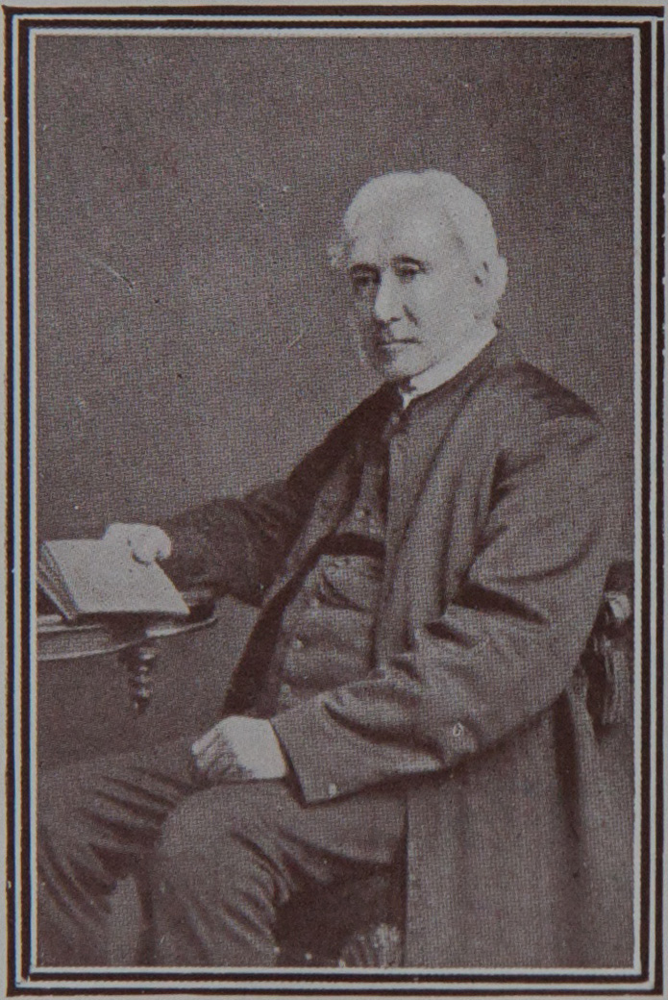

THOMAS COMFIELD HADDON, the eldest son of Thomas and Eliza Haddon, was born on July 25, 1801, in the house at Olney, where the poet Cowper had lived. As a boy he attended his father's school, and afterwards received some higher instruction from Mr. Gauntlett, the Vicar of Olney. He was not, however, a Church boy, but attended the Baptist Chapel, where the Rev. James Simmons, "a man of superior ability and attainments"—as T. C, Haddon described him in later years—influenced him very much, as did also his own cousin, John Pell of Guilsborough, who had settled at Olney as a Doctor of Medicine.
At the age of eighteen, T. C. Haddon went to help his uncle Richard Comfield in his school at Northampton, and two years later entered as a student at the Nonconformist College at Wymondley, Herts. There, however, he began to lose faith in their doctrines, and as he wrote in his brief Mss. autobiography—"after thinking and talking continually on this subject," he resolved to join the Church of England. He was baptised in Olney Church in 1822 by his old friend, Mr. Gauntlett, the Vicar. He then determined to enter the Ministry of the English Church, and Mr. Gauntlett arranged for him to go to S. ]ohn's College, Cambridge. But after a year there he was obliged to come down for financial reasons.
Mr. Haddon then joined his uncle Richard Comfield in the tuition of a City Foundation School, held over the Vestry of S. Lawrence's, Jewry, close to the Guildhall, London. After a time they both left there, and opened a school for gentlemen's sons at Clapham. This prospered well, but at the end of two years Mr. Haddon decided to start a school of his own in Sheep Street, Northampton. Therefore he separated from Mr. Richard Comfield, who soon afterwards married Miss Marie Petrie, daughter of Commissary General Petrie. Thus a link was formed between the family of Haddon and that of Petrie, of which Professor W. M. Flinders Petrie, the famous Egyptologist, is to-day the most eminent member. Mrs. Richard Comfield was his great-aunt.
At Northampton, Mr. Haddon's school quickly prospered. In 1827 a friend lent him money to complete his course at Cambridge—his brother William taking his place at the school during the University Terms. He took his degree in Law, and returned to his Northampton School for a short time till in 1830 he was ordained by Bishop Kaye. of Lincoln, to the Curacy of Waddington in that County. It is a curious coincidence that his Rector there, the Rev. W. Yeadon, afterwards became the father-in--law of the Rev. J. Jones, Vicar of Naseby, the old home of the Haddons. At Waddington, however, his broad views on the Athanasian Creed so greatly offended his Rector that he refused to present him to the Bishop for ordination as a Priest. In his autobiography Mr. Haddon says, "I have never since found reason to alter the opinions I then expressed; but I have lived long enough to see them common enough among thoughtful and devout Christians." Mr. Haddon, thereupon, returned to the School at Northampton, which had been kept by his brothers, Richard and William, with their sister Miss Eliza Haddon as housekeeper. For six years he worked there, taking Clerical duty in the neighbourhood on Sundays, and being ordained Priest by the Bishop of Rochester on April 30, 1837, on the nomination of the Vicar of Duston, near Northampton. Among the pupils at his school was Edward Augustus Freeman, whose subsequent fame as a historian is known to all the world. He gave Mr. Haddon a silver sugar sifter as a mark of his appreciation of the thorough grounding that he had received from him. Mr. Haddon, like his famous pupil, was a Liberal in politics, and the Liberal party in Northampton appointed him their representative among the Trustees of the important Municipal Charities. His acceptance of this post gave great offence to the strongly Conservative parents of many of his pupils, and the School declined in numbers as a consequence. His brother, Richard, had left it soon after marrying Miss M. Caroline Wykes in 1834; his other brother William, resigned his mastership at it in order to go up to Trinity College, Cambridge; and his sister, Miss Eliza Haddon, married her cousin, James Harris. Under all these circumstances the school was given up in 1838.
The following year Mr. Haddon received the Living of Tunstall, Norfolk, from Bishop Stanley of Norwich, the father of Dean Stanley. He had just become engaged to Miss E. M. Bird, of Edgbaston, a woman of great energy and ability, whom in 1840 he took as his wife to a house that he had rented at Freethorpe, the Curacy of which he held along with his Living, there being no Vicarage House at Tunstall. There they lived until 1857, when, for the sake of educational advantages for the six children that had been born to them, the Bishop allowed them to reside at Yarmouth. Mr. Haddon retained the Living of Tunstall, and for a short time—1862 to 1864—he was also Rector of Stokesby. At Albert House, Yarmouth, he had for many years a Preparatory School for boys. There in 1877 Mrs. Haddon died, and seven years later he joined her behind the Veil.
Mr. Haddon's 83 years were spent in labour for others in his schools and parishes. He restored the Churches of both Tunstall and Freethorpe, where his kindly, if somewhat retiring, nature won the deep affection of his people. He possessed a very retentive memory, and a strong sense of humour. Like his brothers he was dark-haired and like them went grey early, being almost grey when he married at the age of 39. His few leisure hours he devoted to gardening and music, being an expert player of the violin cello. His family inherited his musical gifts as well as his powers of teaching, and several of them have put both these talents to good use in scholastic work. His eldest daughter helped him in his School from 1862, and after his death continued it successfully until 1897. His three youngest daughters also kept a school, and the survivor of them is still teaching in Switzerland.
NOTE. The compilation of this and the previous seven pages would have been impossible but for the Manuscript Autobiography of the Rev. 'I`. C. Haddon and other Ms. notes, which his eldest daughter most kindly lent to the Compiler. Miss Haddon also provided nearly all the data for the three following pages, and read them in Proof just before her last illness. It is a matter of deep regret that Miss Haddon passed away before the publication of this book.